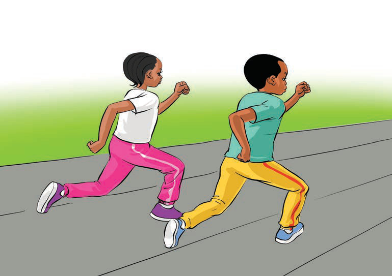

(b) Shuttle runs
This is a high-intensity exercise that involves sprinting from one point to another point and going back to the starting point.
It helps to improve the speed and endurance of the player.
How to do shuttle runs:
(i)
Run from one point to another, touching the ground with your hand each time you change direction, as shown in Figure 6.
(ii)
Repeat 5 to 10 times for 3 sets.

Figure 6: Doing shuttle runs
(c) Broad jumps
This exercise increases jumping power and speed.
This is important in playing various sports, such as netball and football.
How to do broad jumps:
(i)
Stand upright, then bend your knees slightly;
(ii)
Jump forward with force and land on both feet; and
(iii)
Repeat 5 to 10 times for 3 sets, by following steps (i-ii) as shown in Figure 7.